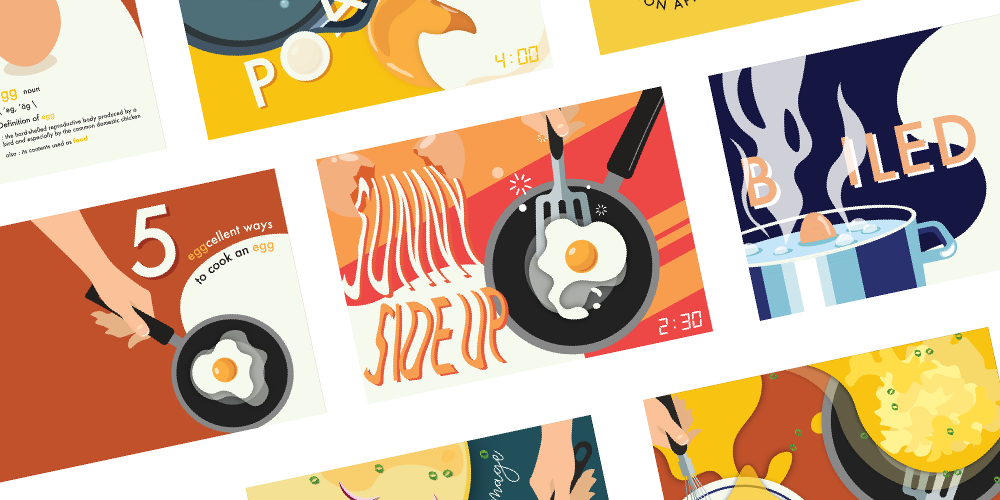
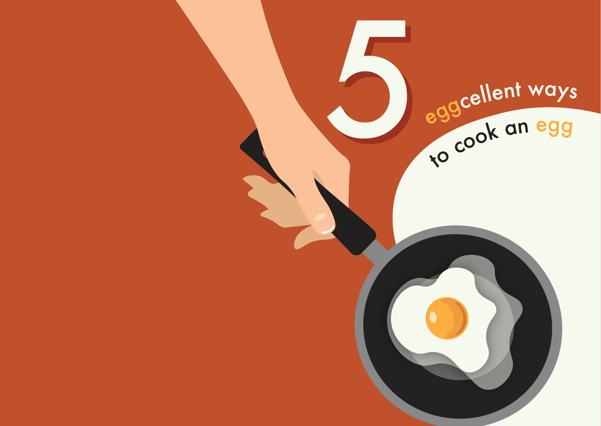
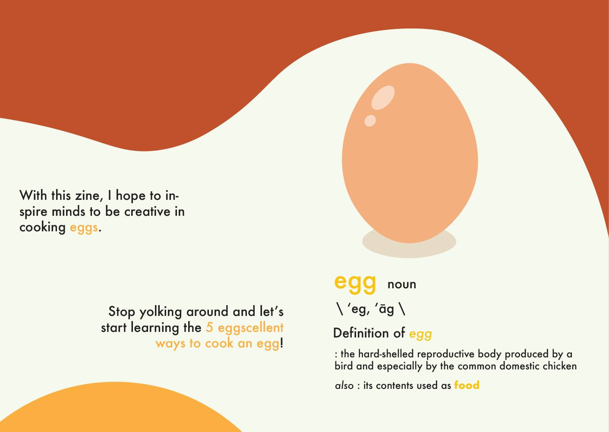
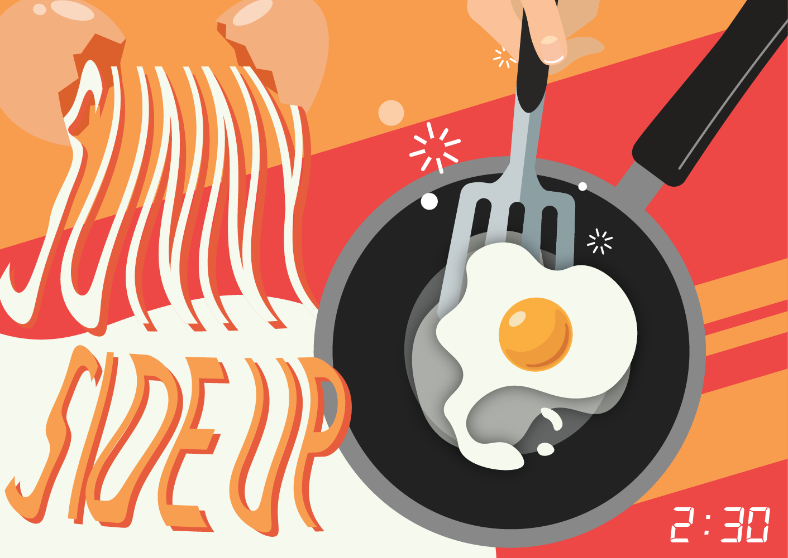
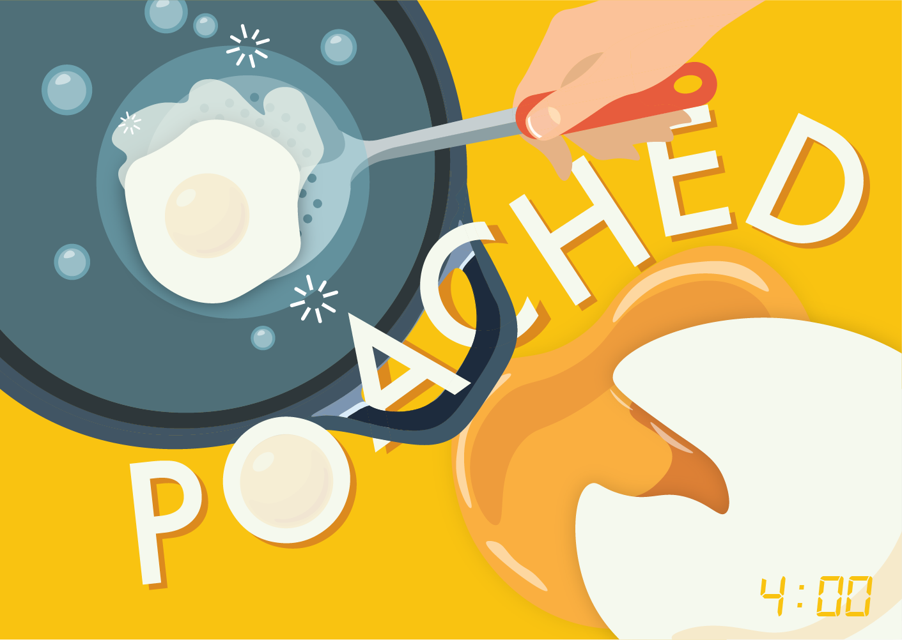
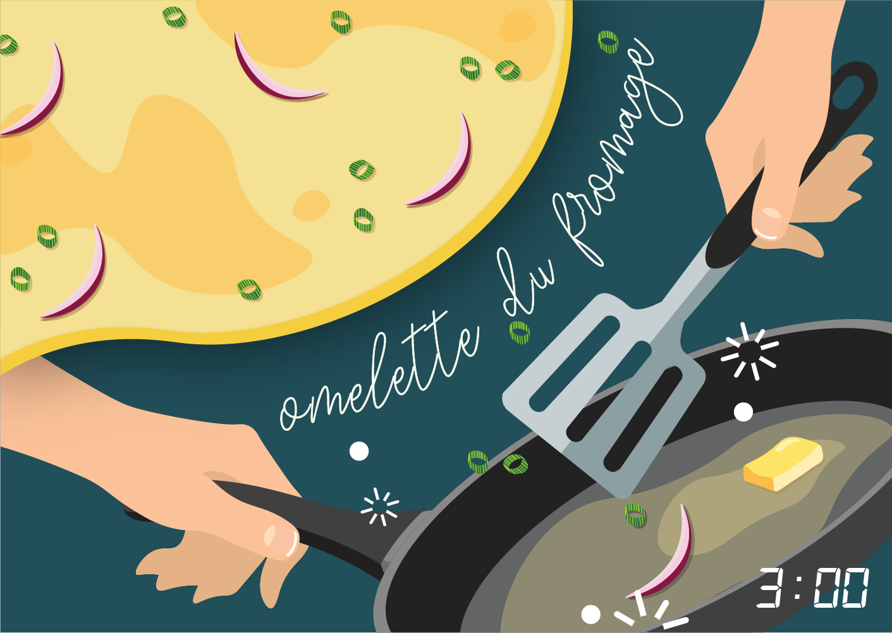
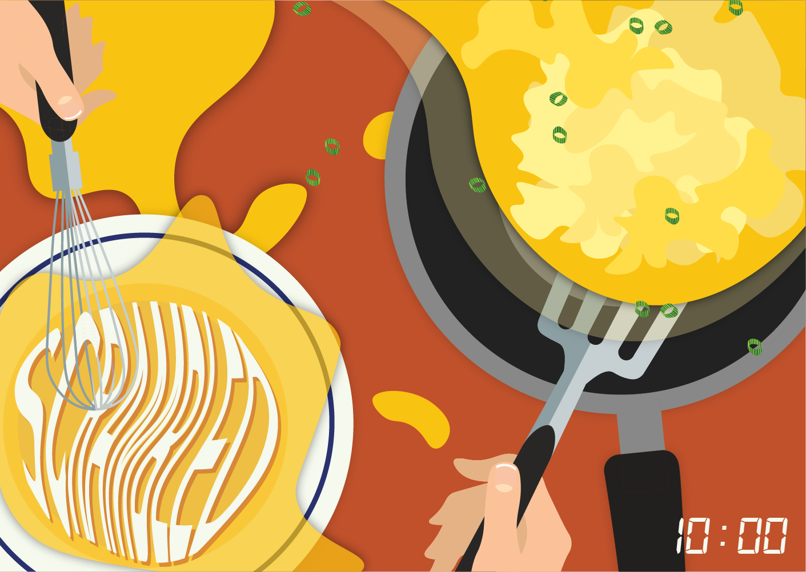
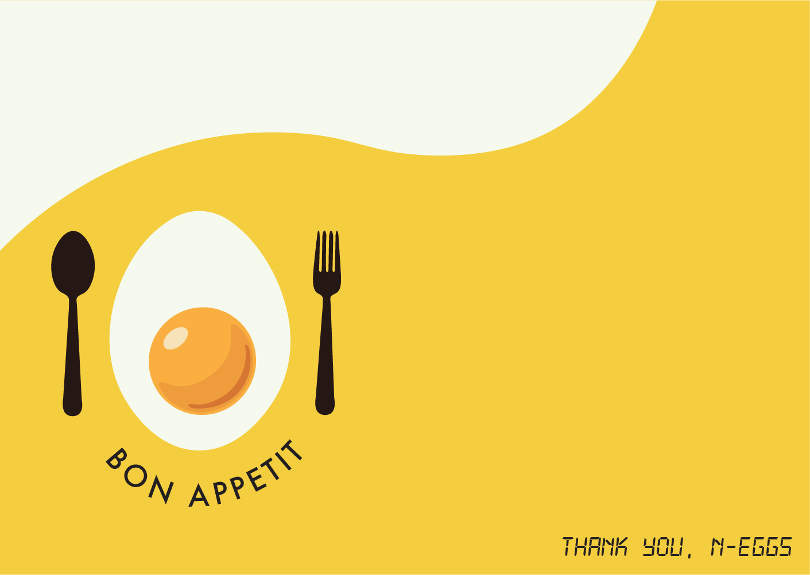

Personal Project — 2018
5 Eggcellent Ways to Cook an Egg

A zine dedicated to the fundamental and basic ways to cooking an egg. I exercised my skill of typography through five illustrative ways of cooking an egg.
Role
Graphic IllustratorGraphic Designer
Team
Individual
Tools
Adobe IllustratorAdobe InDesign
Timeline
1 week, Jan 2018
Objective
Ideation and Goals
01 — Typography
I wanted to exercise my skills in typography and did so by incorporating them into the process of cooking the egg. Viewers would get a sense of how to cook an egg mainly based on the way the illustrations were laid out.02 — Have the zine look interactive.
To make the zine more interactive to viewers and further instruct viewers, I added typography and aerial views.03 — Inform and instruct the viewer.
I made most of the illustrations in aerial view to allow viewers to imagine themselves cooking the egg. In addition, minutes of how long the egg would take to cook are noted at the bottom right corner.Graphics







Next steps
Further inform the viewers —
Although I aimed to incorporate the process of cooking an egg into the overall design, I also could have added additional text within the illustrations that could give further detail to cooking an egg.